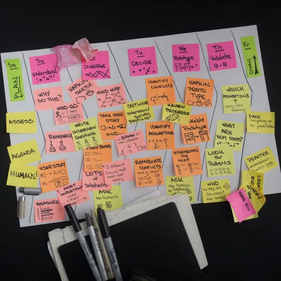
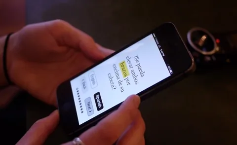
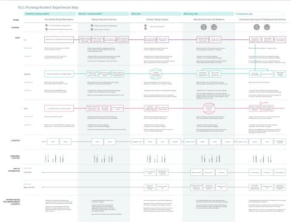
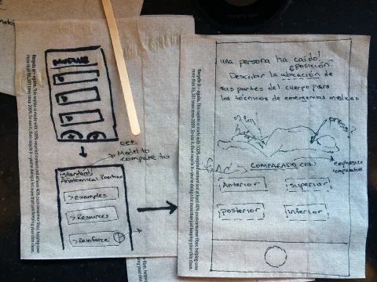
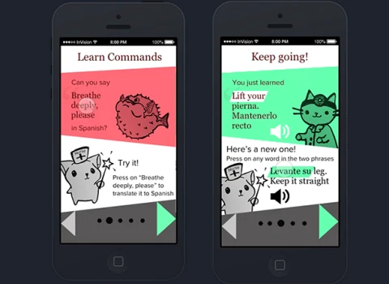

Track ISolution Architecture · Learner Agency and Changed LearningBegin with established knowledge; let the learner choose the next projection.
I. Solution Architecture — Learner-controlled clinical vocabulary practice
§a Debrief — The Story Begins Before the Application
In 2016, I focused the project on multilingual nursing learners carrying work, school, family responsibility, migration, and care for others at the same time. The work then narrowed to Katarina. She was already a nurse. She understood the medicine. Her immediate task was mapping concepts she knew into the English terminology expected in a new program and professional setting.
The work took place during a competitive front-end architecture apprenticeship at Fresh Tilled Soil. Four apprentices brought different practice emphases into an agency of more than twenty people. After years in design and engineering, I chose the intensive apprenticeship as a deliberate way to keep learning and remain close to current practice.
The first prototype allowed academic text to move between Spanish and English. Interviews with nursing students and language educators introduced code-switching as one possible learning resource. Five people then tested the source-era concept. The first round exposed a fundamental problem: the prototype did not make its purpose legible to anyone, even though participants responded positively to the idea of blending languages during learning. A ratio slider read like navigation to nowhere. One bilingual participant became visibly frustrated when English and Spanish parts-of-speech ordering collided. The prototype combined low visual fidelity with unusually granular interaction, making the experience feel more finished and demanding than its explanatory frame could support.
Hand-drawn onboarding illustrations made the next round calmer and gave the interaction a purpose before asking anyone to manipulate it. The coded continuation still had to grapple with parts-of-speech ordering as a data and presentation problem. The durable pivot transferred authority: the learner chooses when to inspect another language, compare terms, hear pronunciation, save a phrase, retrieve it from memory, or remain with the current passage.





§b The Bottleneck — System-Directed Language Behavior Displaced Learner Intent
The prototype centered what the application could change. Learners were trying to preserve what they were doing: understand a clinical idea, locate the unfamiliar expression, and continue learning without losing the thread. Passage-wide switching could interrupt attention and make the system’s guess more prominent than the learner’s purpose.
§c The Intervention — A Learner-Controlled Terminology Practice
The intervention begins with a term, phrase, or passage chosen by the learner. From there, the learner can reveal a translation, inspect an explanation, hear pronunciation, compare contexts, save a term, add a private note, or begin a retrieval prompt. Returning to the original passage remains immediate and reversible.
- Begin with a known clinical concept. Established nursing knowledge leads the session.
- Inspect a source-aware English term. Concept, language, dialect, source release, and review state remain attached.
- Compare at a chosen depth. Translation, pronunciation, context, and explanation appear by learner request.
- Save or annotate. Private notes and chosen views remain learner-owned.
- Retrieve and return. A visible interval supports recall, class discussion, or supervised preparation.






§d The Outcome — Source-Aware Learning Across Real Contexts
The proposed experience is designed to travel while each setting retains its character. During a commute, Katarina can inspect one saved term, listen through headphones, and resume after interruption. At home, she can compare descriptions and practise recall. In class, she can bring a specific source-aware question to an educator. During supervised preparation, the service keeps educational support connected to the program’s policy and qualified professional routes.
The learner can see which concept a term represents, which language and source release it carries, whether a passage is official, educator-reviewed, model-drafted, or learner-authored, what changed after a correction, and which human route can continue the next question.
§e Repeatability — Agency, Provenance, Retrieval, and Human Support
The portable pattern keeps learner choice, concept-centered terminology, retrieval in context, and named human continuations together. A receiving program contributes its learners, languages, terminology sources, curriculum, educator capacity, accessibility conditions, jurisdiction, and desired learning evidence.